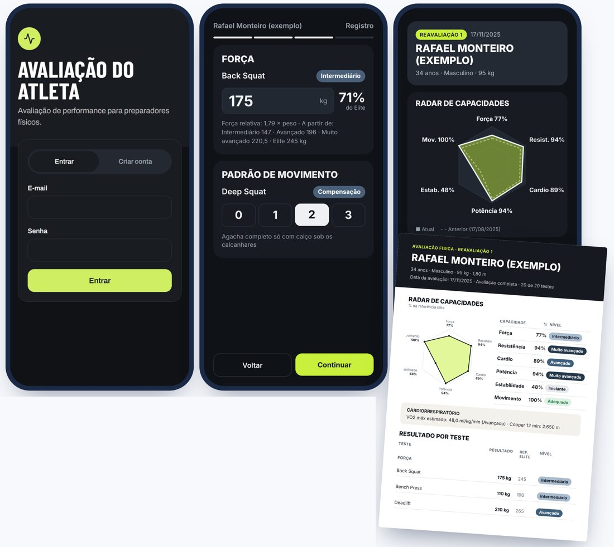

Descobrir o problema real. Construir a solução certa.
Atuo há quase oito anos na interseção entre estratégia, planejamento, produto e operações, transformando dados e problemas de negócio em decisões, processos e resultados mensuráveis.
Busco oportunidades como Product Manager, Product Owner ou Product Operations.
Em cursoPós-graduação em Digital Product Management · FIAP + PM3
MBAGestão de Projetos · USP
Cases
Meus principais cases
Avaliação do atletaWeb app publicadoem teste no treino real
01 · Produto próprio · 0 → 1
Um web app que transforma a avaliação física do treinador em dados comparáveis
Do discovery ao web app publicado, com protótipo aprovado pelo treinador.
Pontualidade das entregas80% → 92%com um MVP operacional, antes de qualquer automação
02 · Abastecimento · NK Store
Discovery com 7 áreas e um MVP que levou a pontualidade de 80% para até 92%
MVP antes da automação: cerca de R$ 6 mil/mês de economia em fretes e +50% de produtividade na Logística.
Adoção da plataforma100%dos mais de 50 fornecedores e dos times internos
03 · Agendamento digital · NK Store
Recebimento previsível e 100% de adoção com uma plataforma digital de agendamento
Regras de negócio, adoção e corte do módulo sem valor. Previsibilidade no recebimento acima de 85%.
Cadastro de produto5 áreascom um único padrão
04 · PLM · NK Store
Um padrão único de cadastro adotado por 5 áreas em um software de gestão de produto (PLM)
Liderei a implantação com requisitos e papéis definidos: cadastro mais rápido e análises mais confiáveis.
Como eu trabalho
Meu ciclo de produto.
Escolha uma etapa para ver o que eu faço e em quais cases isso aparece.
FerramentasMiroNotionPower BISQLExcel avançadoERP LinxClaude · IA generativaLovable
Sobre
Quem é a Bruna
Trabalho onde estratégia, dados e operação se encontram. Estruturei do zero as áreas de Planejamento Comercial e Abastecimento: conduzi o discovery de um problema de distribuição cruzando dados com entrevistas em sete áreas, defini o roadmap, implementei um MVP operacional e evoluí a solução com um backlog de melhorias. Com Tecnologia, construí bases de dados e dashboards para a tomada de decisão.
Também liderei a implantação e a adoção de dois produtos digitais de parceiros, um software de gerenciamento de produto (PLM) e uma plataforma de agendamento de entregas, do mapeamento de processos e dos requisitos ao treinamento de times internos e fornecedores, priorizando o backlog junto aos times de produto dos parceiros.
Hoje uso IA generativa para criar protótipos e plataformas digitais e automatizar processos, e construo um produto próprio: um web app de avaliação física, levado do discovery ao uso real. Também aprofundo meu repertório com a pós em Digital Product Management. Busco posições de Product Manager, Product Owner ou Product Operations em que estratégia, dados e operações gerem impacto direto no negócio.
HojeGerente de Planejamento de Produto · Azzas 2154
Em formaçãoDigital Product Management · FIAP + PM3
Um web app que transforma a avaliação física do treinador em dados comparáveis
Levei um produto próprio do discovery ao uso real: um web app mobile em que o treinador registra a avaliação durante o treino e acompanha a evolução do aluno em números.
Web app publicadoem teste no treino real
Protótipo aprovado"fácil, intuitivo e informativo", segundo o treinador
A avaliação física era feita só no olho, sem registro para comparar a evolução, e o engajamento dos alunos online era baixo.
Meu papel
Discovery, definição do escopo, requisitos, priorização, testes e evolução do produto.
Decisão principal
Priorizar uma experiência simples para o treinador: um fluxo mobile e guiado para o meio do treino, em vez de uma ferramenta difícil de usar.
Estágio atual
Web app publicado e em teste no treino real. Próximo passo: feedback para ver se as metas do piloto foram alcançadas.

Login do treinador, registro no treino, evolução na reavaliação e relatório em PDF para o aluno no WhatsApp. Dados de exemplo. Privacidade desde o MVP: consentimento registrado na avaliação, só treinador e aluno veem os dados, exclusão do aluno da lista pelo treinador e dados mínimos (nome, idade, sexo e peso).
Problema
Avaliações pouco comparáveis e registro inviável no celular. O treinador tinha o conhecimento técnico, mas a percepção dele durante o treino não virava dado. O engajamento dos alunos online também era baixo. Nossa hipótese é que os dois estão ligados: sem números, o aluno não enxerga a própria evolução.
Evidências do discovery
A avaliação acontece durante o treino, enquanto o aluno executa os exercícios.
Só cerca de 35% dos alunos ativos no aplicativo de treino online treinavam de fato.
O treinador já tinha testado vários aplicativos e nenhum trazia as métricas de que ele precisa.
Criei uma planilha de Excel para o treinador. Ela gerava números, mas era rígida no meio do treino e exigia domínio da ferramenta.
Hipótese
Se o registro for mobile e guiado, o treinador vai avaliar todos os alunos pelo app. Saberemos que funcionou quando 100% das avaliações do piloto forem feitas no app.
Hipótese de valor: com a evolução em números, mais alunos seguem treinando. Vamos medir quantos alunos avaliados no app continuam treinando de fato depois da avaliação.
Decisão
Manter o cálculo de nível por capacidade e redesenhar a experiência para o celular. A reavaliação com comparativo entrou no MVP, porque sem ela não dá para validar a hipótese. Sugestão de treino por IA ficou fora: a personalização do treinador é o diferencial dele.
Execução
Protótipo navegável feito no Claude e testado com o treinador antes de desenvolver.
Métricas e faixas de nível definidas com o treinador, com base em referências acadêmicas.
MVP desenvolvido com IA no Lovable.
Privacidade desde o MVP: dados mínimos (nome, idade, sexo e peso), só treinador e aluno veem os dados, consentimento registrado e exclusão do aluno da lista pelo treinador. Antes de ampliar o uso, revisão especializada.
Métricas do piloto
Facilidade de uso: 100% das avaliações feitas pelo app, sem interromper o treino.
Avaliação em números: 100% dos alunos ativos avaliados em 90 dias.
Avaliação completa: todas as capacidades definidas pelo treinador.
Evolução: alunos reavaliados com comparativo, com meta definida pelo treinador.
Engajamento: alunos avaliados que seguem treinando de fato depois da avaliação, comparado com a base de cerca de 35%. Esse dado vem do levantamento do treinador, fora do app.
Aprendizado
A ferramenta concorre com o hábito de avaliar no olho, não com outro app. Para ser adotada, precisa ser tão fácil quanto observar.
Case 02 · Abastecimento · NK Store
Discovery com 7 áreas e um MVP que levou a pontualidade de 80% para até 92%
Liderei o discovery com dados e entrevistas, defini o roadmap a partir do diagnóstico e decidi estabilizar o processo com um MVP antes de investir em automação.
80% → 92%de pontualidade nas entregas
~R$ 6 mil/mêsde economia em fretes não programados
+50%de produtividade da Logística
Problema
Dois problemas se somavam: entregas atrasadas, cobertas com frete emergencial, e conflito entre os canais, que dividiam um estoque único sem regra de prioridade.
Meu papel
Liderei a iniciativa do discovery à implementação, com 7 áreas envolvidas.
Decisão principal
Estabilizar o processo com um MVP operacional antes de automatizar, para validar as regras antes de investir em tecnologia.
Resultado
Pontualidade de 80% para até 92%, menos frete não programado e a Logística focada em executar.
Pontualidade das entregas80% → até 92%
AntesDepois
Discovery
3 anos de histórico de entregas, vendas, estoque, ruptura e frete.
2 workshops e entrevistas individuais com as 7 áreas envolvidas na operação.
Lojas, e-commerce e atacado usavam um estoque único, sem regra de quem recebe primeiro, o que gerava conflito entre os canais.
Roadmap
Com o diagnóstico, apresentei à Diretoria o business case que aprovou o piloto. Roadmap em duas fases: MVP e implementação, depois automação.
MVP
O Planejamento passou a decidir a distribuição, a Logística ficou com a execução e os canais ganharam regras de prioridade. A solução evoluiu com o feedback dos usuários e com o acompanhamento de indicadores.
Trade-offs: as premissas operacionais do MVP trouxeram previsibilidade, mas reduziram a flexibilidade para pedidos de última hora. Já a automação ficou para uma fase seguinte: validar a operação antes evitou retrabalho e custo para o time de Tecnologia, com mais trabalho manual só até o processo se estabilizar.
Mensuração
Indicadores comparados com o histórico ao longo de 3 ciclos: pontualidade, frete não programado e produtividade da Logística.
Evolução
Com a operação validada, começou a fase de automação com o time de Tecnologia. Como o processo já estava medido, o escopo partiu dos dados: 2h30 por dia de trabalho manual que podem ser eliminadas.
Aprendizado
Dados mostram o tamanho do problema; as conversas com as áreas mostram a causa. Automatizar um fluxo sem regras só acelera o erro.
Case 03 · Agendamento digital · NK Store
Recebimento previsível e 100% de adoção com uma plataforma digital de agendamento
Como responsável pelo produto no lado da empresa, defini as regras de negócio de uma plataforma de agendamento de entregas de um parceiro, levei mais de 50 fornecedores e os times internos a usá-la e cortei o módulo que não gerava valor.
100%de adoção pelos mais de 50 fornecedores e pelos times internos
> 85%de previsibilidade no recebimento
0notas com erro na chegada
Problema
Entregas combinadas por e-mail e WhatsApp, recebimento sem planejamento e notas fiscais com erro descobertas na porta.
Meu papel
Regras de negócio, testes de aceitação, priorização com o parceiro e adoção pelos fornecedores e times internos.
Decisão principal
Com base no feedback dos usuários, cortar o módulo de follow-up, que não gerava valor, e concentrar o produto no agendamento.
Resultado
100% de adoção por fornecedores e times internos, previsibilidade acima de 85% e erros de nota corrigidos antes da entrega.
Antes
Entrega combinada por e-mail e WhatsApp, nota conferida com a mercadoria na porta.
→
Depois
Fornecedor agenda na plataforma, com a nota conferida contra o pedido antes da entrega.
Problema
A Logística não sabia quanto ia receber no dia, e notas fiscais com erro geravam retrabalho no Fiscal.
Decisão de regra
Transferi para o fornecedor a conferência da nota e o agendamento: a entrega só é marcada quando a nota bate com o pedido. O time interno deixou de conferir e corrigir notas, o fornecedor ganhou controle sobre as próprias entregas e a comunicação passou a ficar em um só lugar. Ganharam a empresa e os fornecedores.
Decisão de escopo
O follow-up, módulo extra para gerir as entregas, era difícil de operar e não gerava ganho. Decidi com a diretoria cortá-lo e manter esse acompanhamento no Excel e no ERP, que já funcionavam.
Execução
Regras definidas com o time de produto do parceiro.
Testes de aceitação e priorização de melhorias.
Nova rotina, materiais de apoio e treinamento dos fornecedores para usar a plataforma.
Resultado
100% de adoção pelos mais de 50 fornecedores e pelos times internos.
Previsibilidade no recebimento acima de 85%.
Erros de nota corrigidos no agendamento, antes da chegada.
Aprendizado
Quando um processo passa para o fornecedor, ele só adota se enxergar o próprio ganho. Isso exige conversa e prova de valor, não só treinamento.
Case 04 · PLM · NK Store
Um padrão único de cadastro adotado por 5 áreas em um software de gestão de produto (PLM)
Liderei a implantação, da escolha do parceiro à adoção pelas áreas, com a Product Manager do fornecedor.
5 áreascom um único padrão de cadastro
1 só lugarcadastro no software, integrado ao ERP
Problema
Cadastro de produto em Excel, papel e ERP, sem padrão, o que travava a exportação de dados e as análises.
Meu papel
Liderei a implantação: escolha do parceiro, requisitos, priorização, treinamento e adoção pelas áreas.
Decisão principal
Começar pelo que destrava todas as áreas, cadastro padronizado e papéis definidos, e implantar o restante em fases, priorizado no backlog com a PM do parceiro.
Resultado
Cadastro padronizado e mais rápido, feito só no software, que integra direto com o ERP. Responsáveis definidos e análises mais confiáveis.
Antes
Excel, papel e ERP, cada área com seu jeito de cadastrar.
→
Depois
Uma plataforma com um padrão por tipo de produto e responsáveis definidos.
Problema
Não havia padrão de cadastro nem responsáveis definidos.
Informação em papel não dava segurança sobre os dados.
Cadastrar no ERP gerava retrabalho: depois de cadastrado, o produto não podia mais ter os atributos alterados.
Sem dado confiável, as análises ficavam travadas.
Escolha do parceiro
Quatro critérios: estrutura da plataforma, informações de produto cobertas, integração com o ERP e facilidade de uso.
Decisão
A partir do levantamento de todos os cadastros, defini o padrão de cada tipo de produto e os papéis de cada time: quem cadastra, quem controla e quem integra com o ERP.
Execução
Treinamento das áreas usuárias.
Valor do dado padronizado mostrado a cada área.
Plano de implantação com a PM do parceiro: o que entrava agora e o que ficava para depois.
Backlog de funcionalidades, correções e melhorias priorizado a partir do feedback.
Resultado
Cadastro padronizado por tipo de produto.
Cadastro mais rápido: feito só no software, onde os atributos podem ser ajustados, e integrado ao ERP quando os dados estão corretos.
Exportação de dados mais simples e análises mais rápidas e confiáveis.
Gestão entre áreas mais simples, com responsabilidades claras.
Aprendizado
Sem mostrar o valor do produto para quem vai usá-lo, não existe adoção, por melhor que seja a plataforma.
Currículo
Bruna Ogata de Sousa
Product Manager · Estratégia, dados e operações · São Paulo, SP
Profissional sênior com quase 8 anos de experiência em estratégia de produto, dados e operações. Estruturei duas áreas do zero, conduzi discoveries com dados e entrevistas envolvendo até sete áreas, implementei MVPs operacionais e liderei a implantação e a adoção de soluções digitais. Uso IA generativa para criar protótipos e plataformas digitais e automatizar processos, e desenvolvo um produto próprio, um web app de avaliação física já publicado e em teste no treino real. Visão de negócio, capacidade analítica e articulação entre áreas, com resultados em eficiência, produtividade e rentabilidade.
Fev 2026 – atual
Gerente de Planejamento de Produto · Azzas 2154 | Cris Barros
Lidero o planejamento estratégico do portfólio com cerca de 650 SKUs, distribuído entre 13 lojas, e-commerce e atacado, integrando dados de mercado, performance e KPIs de planejado versus realizado para recomendar ajustes de categoria, canal e orçamento às diretorias Comercial e de Operações.
Respondo por decisões de precificação e markup, mantendo o indicador consistentemente 10% acima da meta definida pela diretoria e contribuindo para a rentabilidade sem perder competitividade.
Orquestro decisões de portfólio com Criação, Comercial, Supply e Operações, direcionando o orçamento de compras (Open-to-Buy) e o ciclo de vida dos produtos.
Coordeno o cronograma de lançamento das coleções com Criação, Comercial, Supply e Operações, acompanhando marcos, dependências, responsáveis e entregas.
Conduzi o discovery com 4 áreas internas e identifiquei que, sem dados históricos consolidados para apoio nas decisões, a liberação do portfólio se estendia por várias rodadas. Construí com IA generativa (Claude) uma plataforma digital que reúne esses dados em um só lugar, para decisões de liberação e negociação mais rápidas e confiáveis. Em piloto em uma categoria, com meta de reduzir pela metade o tempo de liberação e expansão prevista para 11 categorias.
Identifiquei um fluxo de alto esforço manual e desenvolvi uma solução com IA generativa (Claude), incluindo agentes simples, para automatizar apresentações executivas e cronogramas, conduzindo testes, implementação e adoção pelo time, e reduzindo em até 75% o tempo dessas tarefas.
Set 2022 – Jan 2026
Coordenadora de Planejamento Comercial e Abastecimento · NK Store
Estruturei do zero as áreas de Planejamento Comercial e Abastecimento, definindo processos, dados, rotinas, ritos de governança (fechamento mensal e acompanhamento de metas por mês e canal) e indicadores, com business reviews periódicos com as diretorias.
Conduzi o discovery de um problema crítico de abastecimento, combinando 3 anos de dados do ERP com workshops e entrevistas envolvendo 7 áreas. Com base no diagnóstico, estruturei o roadmap da iniciativa até a implementação, apresentei à Diretoria o business case que aprovou o piloto, desenhei e implementei um MVP operacional de distribuição por canal e priorizei o backlog de melhorias a partir do feedback dos usuários internos. A iniciativa elevou a pontualidade das entregas de 80% para até 92%, reduziu em cerca de R$ 6 mil por mês os custos com fretes não programados e aumentou em 50% a produtividade da Logística.
Liderei a implantação de um software de gerenciamento de produto (PLM) fornecido por parceiro com gestão da mudança: participei da escolha do fornecedor, mapeei processos, defini requisitos, conduzi treinamentos e apoiei a adoção pelas áreas usuárias. Atuei com a Product Manager do fornecedor na construção e priorização do backlog de funcionalidades, correções e melhorias, padronizando cadastros, reduzindo retrabalho e aumentando a confiabilidade dos dados comerciais.
Liderei a implantação de uma plataforma digital de agendamento de entregas fornecida por parceiro (Pitágoras), com impacto nos processos de recebimento e na área fiscal: estruturei a nova rotina, os materiais de apoio e o treinamento dos fornecedores externos, colaborei com o time de produto do fornecedor na priorização de melhorias e participei dos testes de aceitação. A adoção aumentou a previsibilidade das entregas, padronizou o recebimento de notas fiscais e otimizou o processo da área fiscal.
Em parceria com Tecnologia, traduzi necessidades do negócio em requisitos e conduzi a construção de uma base de dados e dashboards para planejamento e abastecimento, apoiando decisões das áreas envolvidas.
Desenvolvi e testei com dados reais um modelo de Open-to-Buy para marca própria e curadoria nos canais de varejo, e-commerce e atacado, adotado também pelo Financeiro. O markup evoluiu de 6,5 para 7,0, o sell through passou de 50–55% para 55–60% e a cobertura de estoque caiu de mais de cinco meses para 4–4,5 meses.
Fev 2021 – Set 2022
Analista de Planejamento Comercial Pleno e Sênior · Veste S/A | John John
Construí um modelo de planejamento orçamentário para decisões de compra em mais de 50 lojas e no atacado, cruzando histórico de vendas, rentabilidade e estoque para orientar a alocação de investimentos.
Transformei análises de demanda, vendas, estoque e recebimento em recomendações de compra e produção apresentadas à gerência e à diretoria, coordenando decisões entre Planejamento, Produção e Comercial.
Out 2018 – Jan 2021
Analista de Planejamento de Produto e Compras · Cavalera
Trajetória: Estágio de Produto → Assistente de Produto → Assistente de PCP → Analista.
Evoluí de estágio a analista em pouco mais de dois anos, passando por Produto, PCP e Planejamento de Compras, com atuação direta em produção, compras e análise de vendas.
Produto próprio
Product Manager · App de avaliação do atleta (web app mobile)
Liderei um produto de ponta a ponta, do discovery ao lançamento. A partir de entrevistas com o usuário (treinador físico) e de dados de engajamento da base (só cerca de 35% dos alunos ativos treinavam de fato), defini o problema: feita só pela observação, a avaliação física não registrava em dados a evolução do aluno.
Testei a lógica da avaliação em uma planilha. Os testes de usabilidade mostraram que ela era difícil de usar no meio do treino, então mantive o cálculo e levei a experiência para um web app mobile e guiado.
Defini escopo, requisitos e indicadores da avaliação física com o treinador, validei um protótipo navegável feito no Claude e desenvolvi o MVP com IA no Lovable, com privacidade dos dados tratada desde o início.
Estabeleci as métricas de sucesso do lançamento, de adoção (100% das avaliações pelo app e dos alunos ativos avaliados em 90 dias) e de valor (alunos avaliados que seguem treinando), que orientam o roadmap dos próximos incrementos.